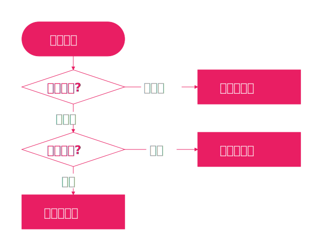

方法选择

我们可以根据题干的表述，选择上述三种方法，快速解题，小题小做。
直接做商法
何时及如何使用？
对于几个确定的数，如果这几个数均具有相同的形式（如都使用\(\log\)表示），那么我们可以直接做商得到大小关系，或和选取的基准数比较大小。详见例题。
（2020年全国II卷文科第10题）已知\(a=\log_{3}2,\) \(b=\log_{5}3,\) \(c=\dfrac{2}{3}\)，则
\(\begin{align} \text{A.} a<c<b \quad &\text{B.}a<b<c\\ \text{C.}b<c<a \quad &\text{D.}c<a<b \end{align}\)
解析
\(\dfrac{a}{c}=\dfrac{3\ln2}{2\ln3}=\dfrac{\ln8}{\ln9}<1\)
\(\dfrac{b}{c}=\dfrac{3\ln3}{2\ln5}=\dfrac{\ln27}{\ln25}>1\)
\(\therefore b>c>a\)
（2021年新高考II卷第7题）已知\(a=\log_{5}2\), \(b=\log_{8}3\), \(c=\dfrac{1}{2}\)，则下列判断正确的是
\(\begin{align} \text{A.} c<b<a \quad &\text{B.} b<a<c\\ \text{C.} a<c<b \quad &\text{D.} a<b<c \end{align}\)
解析
\(\begin{aligned}&a=\log_{5}2=\dfrac{\ln2}{\ln5}<\dfrac{\ln2}{\ln4}=\dfrac{1}{2}\\&b=\log_{8}3=\dfrac{\ln3}{\ln8}>\dfrac{\ln3}{\ln9}=\dfrac{1}{2}\\&\therefore a<c<b\end{aligned}\)
（2020年全国III卷理科第12题）已知\(5^{5}<8^{4}<13^{4}<8^{5}\)。设\(a=\log_{5}3\), \(b=\log_{8}5\), \(c=\log_{13}8\)，则
\(\begin{align} \text{A.} a<b<c \quad &\text{B.} b<a<c\\ \text{C.} b<c<a \quad &\text{D.} c<a<b \end{align}\)
解析
由\(5^{5}<8^{4}\)及\(b=\log_{8}5\)，得\(5b=\log_{8}5^{5}\)，\(<\log_{8}8^{4}=4\)，从而\(b<\dfrac{4}{5}\)。
由\(13^{4}<8^{5}\)及\(c=\log_{13}8\)，则\(4=\log_{13}13^{4}<\log_{13}8^{5}=5c\)，所以\(c>\dfrac{4}{5}\)。所以\(c>\dfrac{4}{5}>b\)。
又\(a=\log_{5}3>0\)，\(b=\dfrac{1}{\log_{5}8}>0\)，所以\(\dfrac{a}{b}\)\(=\log_{5}3 \cdot \log_{5}8\)\(<\left(\dfrac{\log_{5}3+\log_{5}8}{2}\right)^{2}\)\(=\dfrac{(\log_{5}24)^{2}}{4}\)\(<\dfrac{(\log_{5}25)^{2}}{4}=1\)，所以\(a<b\)。
综上，\(a<b<c\)。
（2019年全国I卷第3题）已知\(a=\log_{2}0.2\), \(b=2^{0.2}\), \(c=0.2^{0.3}\)则
\(\begin{align} \text{A.} a<b<c \quad &\text{B.} a<c<b\\ \text{C.} c<a<b \quad &\text{D.} b<c<a \end{align}\)
解析
\(a<0<c<0.2^0=1=2^0<b\)
泰勒展开法
我为什么建议你记泰勒公式
- 熟记的情况下，泰勒公式做“比大小”的题比常规方法快，无需复杂计算，且可以三个数一起比较，而无需两两单独比较。详见例题。
- 高考曾多次以泰勒公式为背景命题，试题涵盖多种类型。除了本文中的应用，泰勒公式还可用于函数导数题目，详见此前推送。
- 高中本科衔接。无论是985还是211大学，大部分理工科专业的培养方案均包含《高等数学》，而泰勒公式作为其中的基础内容，一般会在大一上学期的通识课中正式介绍。
何时及如何使用？
对于几个确定的数，如果这几个数均具有不同的形式（如，有\(\log\)，指数/幂，三角函数），那么我们可以直接对该数进行泰勒展开。
当\(x→0\)时（如\(x=\pm 0.1\)或\(\pm 0.01\)或\(\pm 0.02\)，等等），
\(e^{x}=1+x+ \dfrac{x^{2}}{2!}+ \dfrac{x^{3}}{3!}+ \cdots\)
\(\ln \left(1+x\right)=x- \dfrac{1}{2}x^{2}+ \dfrac{1}{3}x^{3}- \dfrac{1}{4}x^{4} \cdots\)
$(1+x)^{}= 1 + x \[+\dfrac { \alpha ( \alpha - 1 ) } { 2 ! } x ^ { 2 }\]+ {3!} x ^ { 2 } + $
\(\sin x=x- \dfrac{x^{3}}{3!}+ \dfrac{x^{5}}{5!} \cdots\)
\(\cos x=1- \dfrac{x^{2}}{2!}+ \dfrac{x^{4}}{4!}- \dfrac{x^{6}}{6!} \cdots\)
\(\tan x=x+ \dfrac{x^{3}}{3}+ \dfrac{2}{15}x^{5}+o\left(x^{5}\right)\)
其中，\(e^{x}\)、\(\ln \left(1+x\right)\)、\((1+x)^{\alpha}\)和\(\sin x\)这四个函数的展开式最为常用，需熟练使用。\(\cos x\)的展开可通过\(\sin x\)的展开求导得到，无需单独记忆。\(\tan x\)在高中阶段较少涉及，可选择记忆。
一般来说，展开到第3项即可得出答案。具体的使用方法，参见第1题解析。
（2022年新高考I卷第7题）设\(a=0.1e^{0.1}\), \(b=\dfrac{1}{9}\), \(c=-\ln0.9\)，则
\(\begin{aligned} \text{A.} a<b<c \quad &\text{B.} c<b<a\\ \text{C.} c<a<b \quad &\text{D.} a<c<b \end{aligned}\)
详细解析、说明及注释
对于\(a\)，我们取\(x=0.1\)，展开\(e^{0.1}\)：
\(\begin{aligned} a&=0.1\:e^{0.1}\\ &=0.1(1+0.1+\dfrac{0.1^2}{2!})\\ &=0.1+0.01+\dfrac{0.001}{2}+\cdots \end{aligned}\)
对于\(c\)，我们取\(x=-0.1\)，展开\(\ln(1-0.1)\)：
\(\begin{aligned} c&=-\ln0.9=-\ln(1-0.1)\\ &=-\left((-0.1)-\dfrac{(-0.1)^2}{2}+\cdots\right)\\ &=0.1+\dfrac{0.01}{2}+\cdots \end{aligned}\)
对于\(b\)，由于分母为9，我们直接将循环小数展开（此处不需要泰勒公式）：
\(b=\dfrac{1}{9}=0.\dot{1}=0.1+0.01+0.001+\cdots\)
接下来比较大小。为了方便观察，我们先在草稿纸上对齐了写一遍：
\(\begin{alignat}{4} a&=0.1+&&0.01+&&&\dfrac{0.001}{2}+&&&&\cdots\\ b&=0.1+&&0.01+&&&0.001+&&&&\cdots\\ c&=0.1+&&\dfrac{0.01}{2}+&&&\cdots&&&& \end{alignat}\)
对于\(a\)和\(c\)，第一项\(0.1\)相同，比较第二项：
\(\because0.01>\dfrac{0.01}{2},\therefore a>c\).
对于\(a\)和\(b\)，第一、二项相同，比较第三项：
\(\because0.001>\dfrac{0.001}{2},\therefore b>a\).
综上，\(b>a>c\).
【说明】比较时，从展开式的第一项开始比较，只要遇到大小不相同的项，即可判断原数大小。
换句话说，考生无需考虑“即使该项较小，但后面加的会不会使原数更大”的问题——答案是必然不会，因为后一项比前一项小得多（规范表述为：后一项是前一项的高阶无穷小），所以后一项及之后的影响可忽略不计。
例如，若比较\(1+0.1+0.005+\cdots\)和\(1+0.3+0.002+\cdots\)，我们只需比较\(0.1\)和\(0.3\)即知后者大。因为\(0.005\)和\(0.002\)太小了，它俩谁大谁小已不重要。
【注】有学生问，“这几个数看上去没啥关系，但按计算器发现数值上很接近，命题组是怎么想到的这三个数？”本源就在这里。无论是指对幂还是三角函数，统统都可以用泰勒公式展开成多项式相加的形式。命题时，只要保证展开式的前一或两项相同，最后的得数就接近。知道了这一点，相信你也可以出类似的题吧？（毕竟先射箭后画靶，还是不难的）快来评论区分享你出的题吧！
（2022年全国甲卷12题）已知\(a=\dfrac{31}{32}\), \(b=\cos\dfrac{1}{4}\), \(c=\sin\dfrac{1}{4}\)，则()
\(\begin{align} \text{A.} c>b>a \quad &\text{B.} b>a>c\\ \text{C.} a>b>c \quad &\text{D.} a>c>b \end{align}\)
解析
\(a=1-\dfrac{1}{32}\)
\(\begin{aligned} b&=\cos\dfrac{1}{4}=1-\dfrac{(\frac{1}{4})^{2}}{2!}+\dfrac{(\frac{1}{4})^{4}}{4!}+\cdots\\ &=1-\frac{1}{32}+\frac{1}{4^{4}\times4!}+\cdots \end{aligned}\)
\(\begin{aligned} c&=4\sin\dfrac{1}{4}=4\left(\dfrac{1}{4}-\dfrac{1}{4^{3}\times3!}+\cdots\right) \\ &=1-\frac{1}{96}+\cdots \end{aligned}\)
\(\because\dfrac{1}{4^{4}\times4!}>0,\therefore b>a\)
\(\because-\dfrac{1}{96}>-\dfrac{1}{32},\therefore c>b\)
综上，\(c>b>a\).
（2021年全国乙卷第12题）设\(a=2\ln1.01\), \(b=\ln1.02\), \(c=\sqrt{1.04}-1\)，则
\(\begin{align} \text{A.} a<b<c \quad &\text{B.} b<c<a\\ \text{C.} b<a<c \quad &\text{D.} c<a<b \end{align}\)
解析
\(\begin{aligned} a&=2\ln1.01=2\ln(1+0.01)\\ &=2(0.01-\frac{0.01^{2}}{2}+\cdots) \\ &=0.02-0.0001+\cdots \end{aligned}\)
\(\begin{aligned} b&=\ln1.02=\ln(1+0.02) \\ &=0.02-0.0002+\frac{8}{3}\times10^{-6}+\cdots \end{aligned}\)
\(\begin{aligned} c&=\sqrt{1.04}-1=(1+0.04)^{\frac{1}{2}}-1\\ &=0.02-0.0002+4\times10^{-6}+\cdots \end{aligned}\)
\(\therefore a>c>b\).
构造函数法
何时及如何使用？
如果题干给的就是隐函数的表达形式，我们直接根据题干构造函数。
（2020年全国I卷理科第12题）若\(2^{a}+\log_{2}a=4^{b}+2\log_{4}b\)，则
\(\begin{align} \text{A.} a>2b \quad &\text{B.} a<2b\\ \text{C.} a>b^{2} \quad &\text{D.} a<b^{2} \end{align}\)
解析
令\(f(x)=2^{x}+\log_{2}x\)，
因为\(2^{x}\)在\((0，+∞)\)上单调递增，\(\log_{2}x\)在\((0，+∞)\)上单调递增，
所以\(f(x)=2^{x}+\log_{2}x\)在\((0，+∞)\)上单调递增。
又\(2^{a}+\log_{2}a\)\(=4^{b}+2\log_{4}b\)\(=2^{2b}+\log_{2}b\)\(<2^{2b}+\log_{2}(2b)\)，
所以\(f(a)<f(2b)\)，
所以\(a<2b\)。故选B.
（2020年全国II卷第11题）若\(2^{x}-2^{y}<3^{-x} - 3^{-y}\)，则：
\(\begin{align} &\text{A.} \ln(y - x + 1)> 0 &\text{B.} \ln(y - x + 1)< 0\\ &\text{C.} \ln | x - y | > 0 &\text{D.} \ln | x - y | < 0 \end{align}\)
解析
本题考查函数的单调性以及对数值正负的判断。
由\(2^{x}-2^{y}<3^{-x}-3^{-y}\)，
可得\(2^{x}-3^{-x}<2^{y}-3^{-y}\)。
设\(f(x)=2^{x}-3^{-x}\)，
易知\(f(x)\)在\(\mathbb{R}\)上为增函数。
又\(f(x)<f(y)\)，所以\(x<y\)。
则\(y-x+1>1\)，
所以\(\ln(y-x+1)>0\)，
故A正确，B错误。
而当\(x=1,y=2\)时，
\(\ln|x-y|=0\)，故C，D错误。
故选A。


发表您的看法